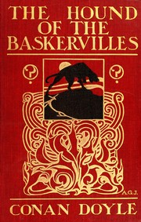
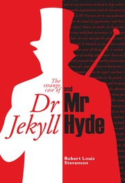
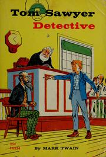

This is probably one of the top classics of "golden age" detective fiction. Anyone who's read any mystery novels at all will be familiar with the tropes -- an English country house in the first half of the twentieth century, a locked room, a dead body, an amateur sleuth, a helpful sidekick, and all the rest.
It's a clever story, ingenious enough in its way, and an iconic example of Agatha Christie / Dorothy Sayers -type murder mysteries. If you've read more than a few of those kinds of books, you might find this one a little predictable, but it's fun despite that.

The Hound of the Baskervilles
The Hound of the Baskervilles is the third of the crime novels written by Sir Arthur Conan Doyle featuring the detective Sherlock Holmes. Originally serialised in The Strand Magazine from August 1901 to April 1902, it is set largely on Dartmoor in Devon in England's West Country and tells the story of an attempted murder inspired by the legend of a fearsome, diabolical hound of supernatural origin. Sherlock Holmes and his companion Dr. Watson investigate the case. This was the first appearance of Holmes since his apparent death in "The Final Problem", and the success of The Hound of the Baskervilles led to the character's eventual revival.

Dr Jekyll and Mr. Hyde
Set in the backdrop later Victorian London, this book can be told as belonging to the category of science fiction, psychological thriller and suspense thriller. Dr Jekyll, a famous and notable scientist seems to be somehow linked with Mr Hyde, a most-wanted criminal. Mr Utterson, a good renown lawyer of the period as well as Jekyll's good friend, tries connecting the dots to find out the truth, a most-shocking truth.

Tom Sawyer, Detective
Tom Sawyer, Detective follows Twain's popular novels The Adventures of Tom Sawyer, Adventures of Huckleberry Finn, and Tom Sawyer Abroad. In this novel, Tom turns detective, trying to solve a murder. Twain plays with and celebrates the detective novel, wildly popular at the time. This novel, like the others, is told through the first-person narrative of Huck Finn.